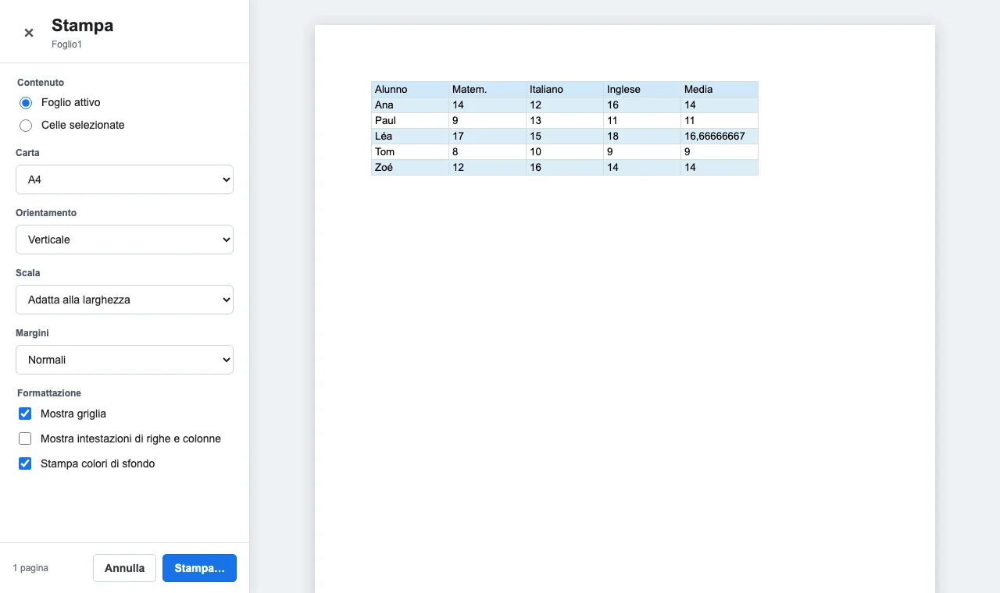

Stampare
File › Stampa… o Ctrl P mostra le pagine come saranno stampate.

| Impostazione | Scelte |
|---|---|
| Contenuto | il foglio attivo, o le celle selezionate prima di aprire la finestra |
| Carta | A4, Letter |
| Orientamento | verticale, orizzontale |
| Scala | Dimensioni effettive; Adatta alla larghezza: tutte le colonne sulla larghezza di una pagina; Adatta a una pagina |
| Margini | normali, stretti, larghi |
| Formattazione | griglia, intestazioni di righe e colonne, colori di sfondo |
Stampa… apre la finestra del browser, dove si sceglie la stampante o il salvataggio in PDF.
- Si stampano solo le celle, con la loro formattazione: né grafici, né immagini, né sparkline.
- Le righe e le colonne nascoste non si stampano.
- Una casella si stampa come TRUE o FALSE.
- Si stampa un foglio alla volta.
Per stampare con i grafici, salvare la cartella e aprirla in Excel o LibreOffice.